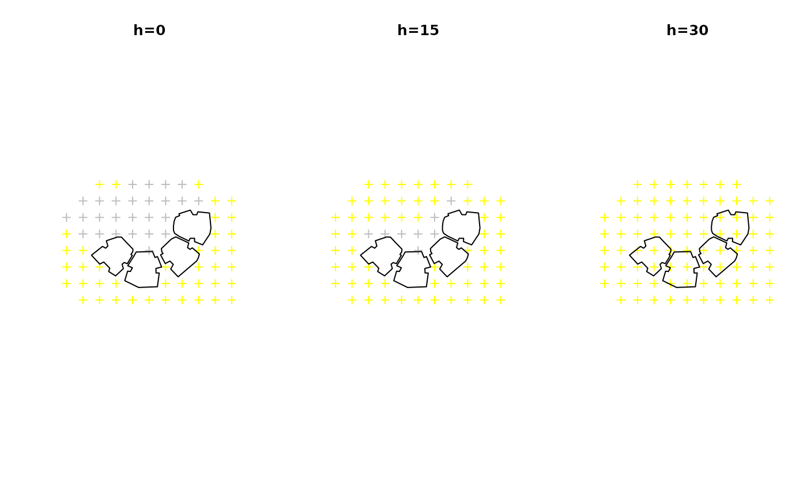

R/inShadow.R
inShadow.RdThis function determines whether each given point in a set of 3D points (location), is shaded or not, taking into account:
Obstacles outline (obstacles), given by a polygonal layer with a height attribute (obstacles_height_field), or alternatively a Raster* which is considered as a grid of ground locations
Sun position (solar_pos), given by azimuth and elevation angles
Alternatively, the function determines whether each point is in shadow based on a raster representing shadow height shadowHeightRaster, in which case obstacles, obstacles_height_field and solar_pos are left unspecified.
# S4 method for SpatialPoints,Raster,missing,missing inShadow( location, shadowHeightRaster, obstacles, obstacles_height_field, solar_pos ) # S4 method for SpatialPoints,missing,ANY,ANY inShadow( location, shadowHeightRaster, obstacles, obstacles_height_field, solar_pos = solarpos2(location, time), time = NULL, ... ) # S4 method for Raster,missing,ANY,ANY inShadow( location, shadowHeightRaster, obstacles, obstacles_height_field, solar_pos = solarpos2(pnt, time), time = NULL, ... )
| location | A |
|---|---|
| shadowHeightRaster | Raster representing shadow height |
| obstacles | A |
| obstacles_height_field | Name of attribute in |
| solar_pos | A |
| time | When both |
| ... | Other parameters passed to |
Returned object is either a logical matrix or a Raster* with logical values -
If input location is a SpatialPoints*, then returned object is a matrix where rows represent spatial locations (location features), columns represent solar positions (solar_pos rows) and values represent shadow state
If input location is a Raster*, then returned object is a RasterLayer or RasterStack, where raster layers represent solar positions (solar_pos rows) and pixel values represent shadow state
In both cases the logical values express shadow state:
TRUE means the location is in shadow
FALSE means the location is not in shadow
NA means the location 3D-intersects an obstacle
For a correct geometric calculation, make sure that:
The layers location and obstacles are projected and in same CRS
The values in obstacles_height_field of obstacles are given in the same distance units as the CRS (e.g. meters when using UTM)
# Method for 3D points - Manually defined opar = par(mfrow = c(1, 3)) # Ground level location = sp::spsample( rgeos::gBuffer(rgeos::gEnvelope(build), width = 20), n = 80, type = "regular" ) solar_pos = as.matrix(tmy[9, c("sun_az", "sun_elev")]) s = inShadow( location = location, obstacles = build, obstacles_height_field = "BLDG_HT", solar_pos = solar_pos )#> | | | 0% | |======================================================================| 100%plot(location, col = ifelse(s[, 1], "grey", "yellow"), main = "h=0") plot(build, add = TRUE) # 15 meters above ground level coords = coordinates(location) coords = cbind(coords, z = 15) location1 = SpatialPoints(coords, proj4string = CRS(proj4string(location))) solar_pos = as.matrix(tmy[9, c("sun_az", "sun_elev")]) s = inShadow( location = location1, obstacles = build, obstacles_height_field = "BLDG_HT", solar_pos = solar_pos )#> | | | 0% | |======================================================================| 100%plot(location, col = ifelse(s[, 1], "grey", "yellow"), main = "h=15") plot(build, add = TRUE) # 30 meters above ground level coords = coordinates(location) coords = cbind(coords, z = 30) location2 = SpatialPoints(coords, proj4string = CRS(proj4string(location))) solar_pos = as.matrix(tmy[9, c("sun_az", "sun_elev")]) s = inShadow( location = location2, obstacles = build, obstacles_height_field = "BLDG_HT", solar_pos = solar_pos )#> | | | 0% | |======================================================================| 100%par(opar) # Shadow on a grid covering obstacles surface if (FALSE) { # Method for 3D points - Covering building surface obstacles = build[c(2, 4), ] location = surfaceGrid( obstacles = obstacles, obstacles_height_field = "BLDG_HT", res = 2, offset = 0.01 ) solar_pos = tmy[c(9, 16), c("sun_az", "sun_elev")] solar_pos = as.matrix(solar_pos) s = inShadow( location = location, obstacles = obstacles, obstacles_height_field = "BLDG_HT", solar_pos = solar_pos ) location$shadow = s[, 1] plotGrid(location, color = c("yellow", "grey")[as.factor(location$shadow)], size = 0.5) location$shadow = s[, 2] plotGrid(location, color = c("yellow", "grey")[as.factor(location$shadow)], size = 0.5) # Method for ground locations raster ext = as(raster::extent(build) + 20, "SpatialPolygons") location = raster::raster(ext, res = 2) proj4string(location) = proj4string(build) obstacles = build[c(2, 4), ] solar_pos = tmy[c(9, 16), c("sun_az", "sun_elev")] solar_pos = as.matrix(solar_pos) s = inShadow( ## Using 'solar_pos' location = location, obstacles = obstacles, obstacles_height_field = "BLDG_HT", solar_pos = solar_pos, parallel = 3 ) time = as.POSIXct(tmy$time[c(9, 16)], tz = "Asia/Jerusalem") s = inShadow( ## Using 'time' location = location, obstacles = obstacles, obstacles_height_field = "BLDG_HT", time = time, parallel = 3 ) plot(s) # Method for pre-calculated shadow height raster ext = as(raster::extent(build), "SpatialPolygons") r = raster::raster(ext, res = 1) proj4string(r) = proj4string(build) r[] = rep(seq(30, 0, length.out = ncol(r)), times = nrow(r)) location = surfaceGrid( obstacles = build[c(2, 4), ], obstacles_height_field = "BLDG_HT", res = 2, offset = 0.01 ) s = inShadow( location = location, shadowHeightRaster = r ) location$shadow = s[, 1] r_pnt = raster::as.data.frame(r, xy = TRUE) coordinates(r_pnt) = names(r_pnt) proj4string(r_pnt) = proj4string(r) r_pnt = SpatialPointsDataFrame( r_pnt, data.frame( shadow = rep(TRUE, length(r_pnt)), stringsAsFactors = FALSE ) ) pnt = rbind(location[, "shadow"], r_pnt) plotGrid(pnt, color = c("yellow", "grey")[as.factor(pnt$shadow)], size = 0.5) # Automatically calculating 'solar_pos' using 'time' - Points location = sp::spsample( rgeos::gBuffer(rgeos::gEnvelope(build), width = 20), n = 500, type = "regular" ) time = as.POSIXct("2004-12-24 13:30:00", tz = "Asia/Jerusalem") s = inShadow( location = location, obstacles = build, obstacles_height_field = "BLDG_HT", time = time ) plot(location, col = ifelse(s[, 1], "grey", "yellow"), main = time) plot(build, add = TRUE) }